| Birth | 1949, Dihua Street, Taipei City, Taiwan |
| Education | Graduated from Tamkang High School. Later, he received an honorary degree in business administration from Cal Grad College in California, USA. |
| Known identity | Founder of WEVER Group, global marketing executive, reformer of the Old Tamsui Golf Course, and promoter of golf. |
| Profession | Entrepreneur, Chairman of WEVER Group, President of the Taiwan Golf Club, and social enterprise leader. |
| Parents | Father: 紀順吉 Chi Shun-Ji, Adoptive mother: 邱金圓 Qiu Jin-yuan |
| Spouse | 劉柑柑 Candy |
| Children | Eldest son: 紀承緯 Chi Cheng-wei, Second son: 紀柏緯 Chi Bai-wei |
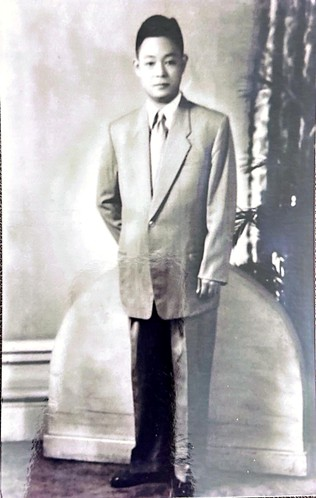
1950s, photo of Father before he went to Japan to promote Taiwanese fruit
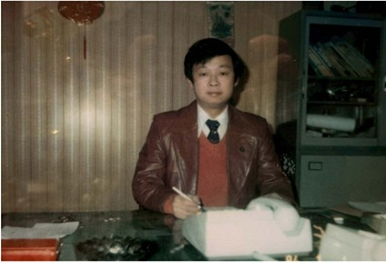
Personal portrait of Mr. Chi Wen-Hao
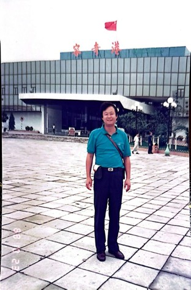
After the lifting of martial law, Chi Wen-Hao made his first trip to mainland China in 1988, landing at Rongqi Port in Guangdong Province
Chi Wen-Hao was born in Dihua Street, Taipei City in a commercial family. His family was initially wealthy, but later declined after his father suffered a severe stroke. During his youth, he studied and worked part-time at Tamkang High School, and worked as a caddie at the Old Tamsui Golf Course during holidays, cultivating a deep affection for golf and a basic understanding of service and communication.
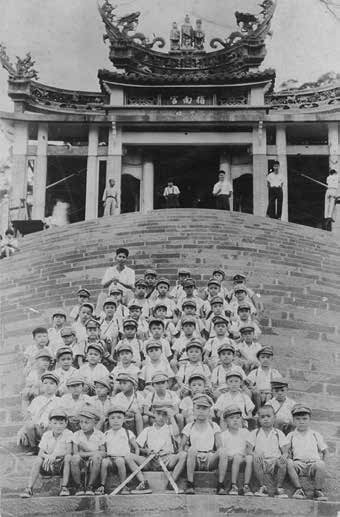
Group photo during a school trip to Zhinan Temple when studying at Yongle Elementary School
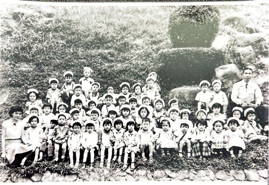
Childhood group photo
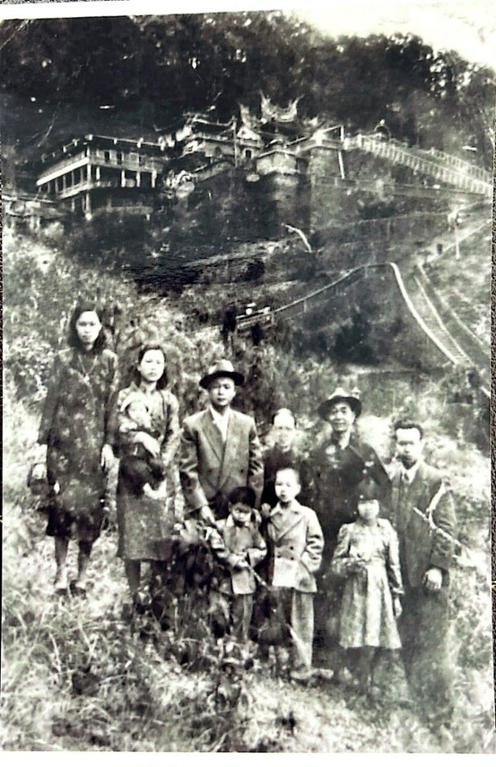
1900s, the Chi family took a photo at Muzha Xianggong Temple. At this time, Chi Wen-Hao was not yet born
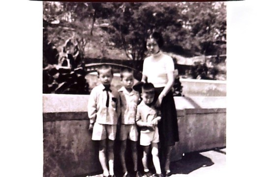
Photo with family
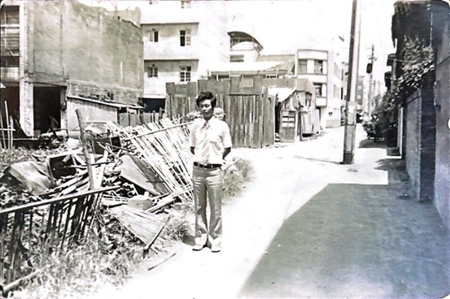
Dihua Street
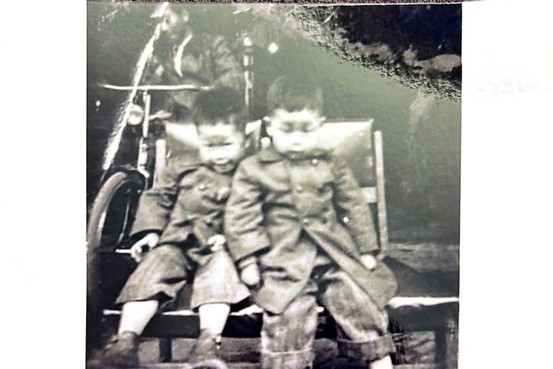
Photo with twin brother
In 1974, Chi Wen-Hao started his own business, establishing WEVER Enterprise. Initially focused on OEM for export, emphasizing the production and export of outdoor sports goods (such as wakeboards, ropes and related equipment), with products marketed to many countries around the world and establishing long-term customer relationships. The company later expanded into diverse fields such as trade, culture and investment.
Advocates that business operations should have the concepts of "kindness, care, humility, self-reflection in adversity, and perseverance", and promotes management and quality responsibility with practical experience.
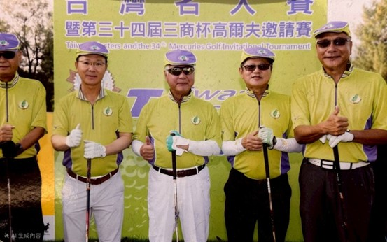
Business Cup Golf Invitational Tournament
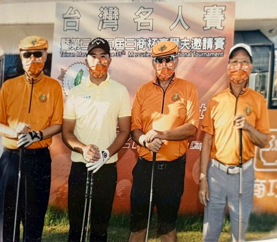
Business Cup Golf Invitational Tournament
Chi Wen-Hao has been involved in the affairs of Taiwan Golf Club (Old Tamsui Golf Course) for many years, and led the reform during his term as the 37th President (2019–2021) of the Taiwan Golf & Country Club (Old Tamsui Golf Course). During his tenure, he strengthened the quality of the venue, actively coordinated leases and plans with local governments, and during the pandemic, he assisted grassroots staff in seeking relief and support measures.
He advocated combining educational institutions and training resources to promote the development of golf, and led the golf course to promote various cultural and promotional activities at the centennial historical node.
Chi Wen-Hao has long been involved in social welfare and local exchanges, and has served as the Chief Representative of San Bernardino County, California in Taiwan (facilitating various local exchanges and cooperation), and has actively participated in organizations such as Rotary International and the Tamkang High School Alumni Association.
He also pays attention to youth education, sharing business philosophy, and promoting golf, and has a certain influence in local communities and industry circles.
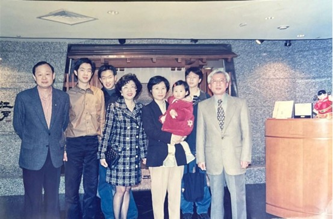
Chi Wen-Hao (left 1)
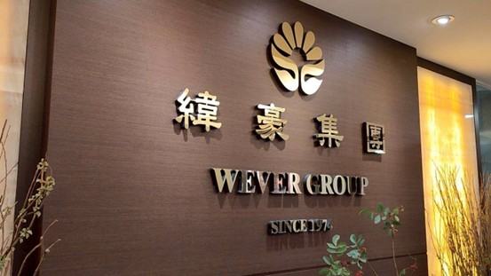
WEVER Group Company
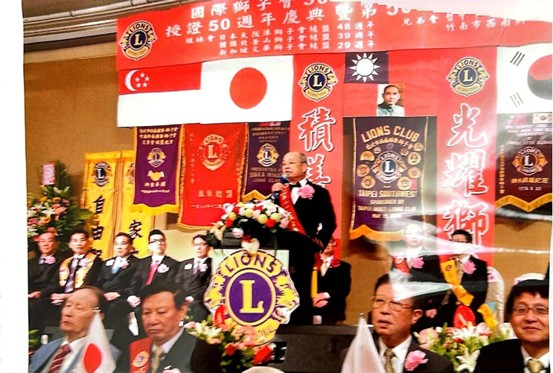
Chi Wen-Hao speaking at the Lions Clubs International celebration
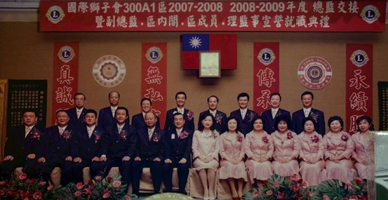
Lions Clubs International Inauguration Ceremony
Chi Wen-Hao emphasizes that enterprises and individuals should have perseverance and professionalism, and advocates that daily life and business opportunities should be closely linked, with "professionalism, experience, and long-term customer trust" as the foundation for corporate success. He also believes that supporting society and grassroots workers is part of corporate responsibility.
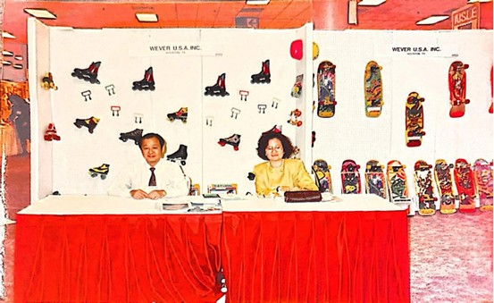
Roller skates and skateboards
Chi Wen-Hao's family life is centered on Tamsui. His wife, 劉柑柑 (Candy) and two sons have accompanied him through different stages of business operation and social participation for many years. He chose to take long-term root in Tamsui, not only running his business, but also managing the golf community and local connections.
"For him, life is not about constantly expanding outwards, but about doing things deeply and for a long time in a familiar place. This rhythm has also become the best annotation of his life's actions."
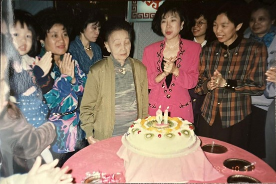
Photo with family
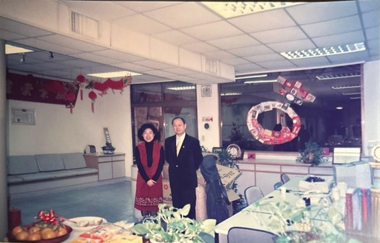
Photo with his wife